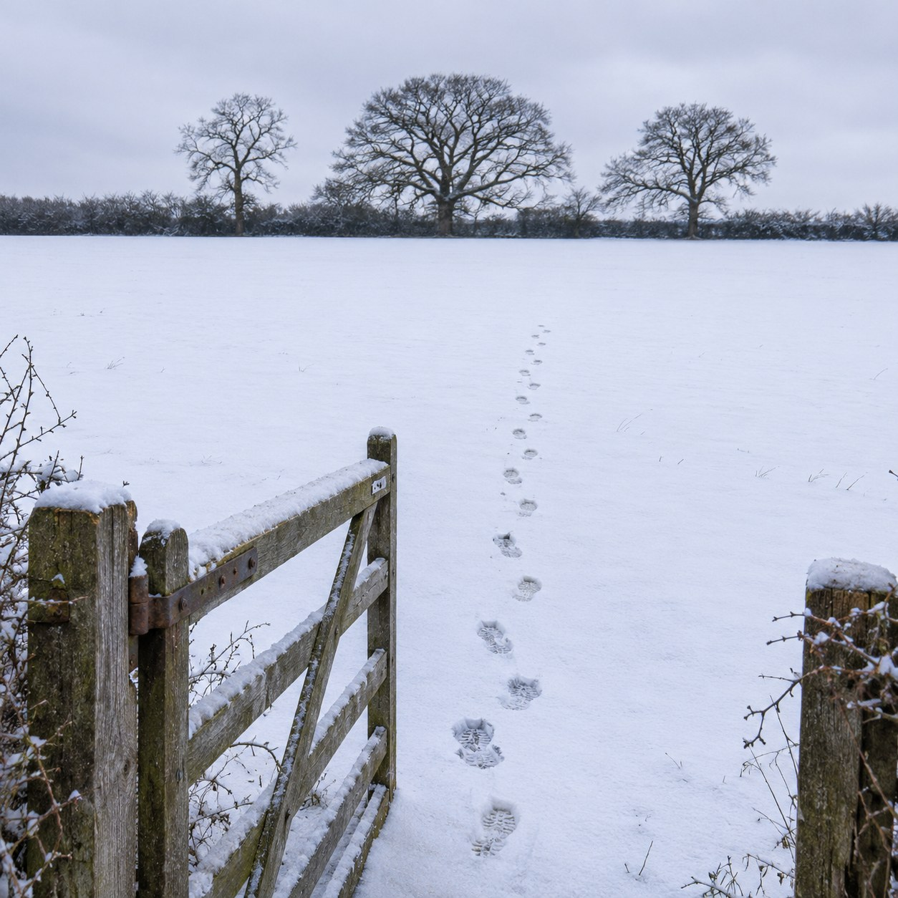
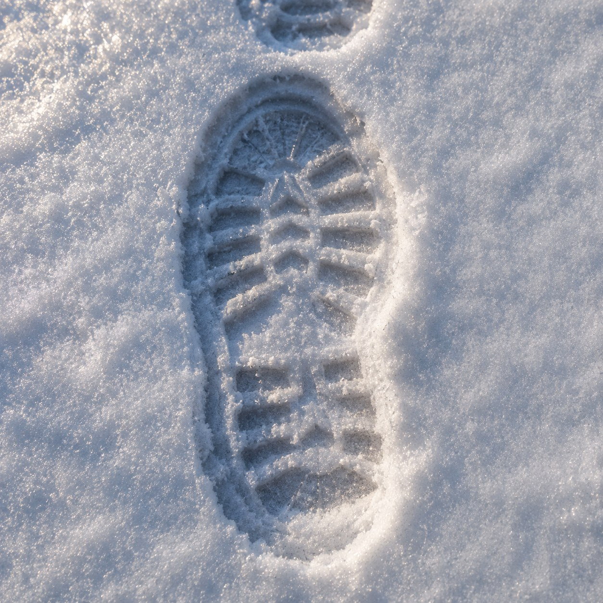

Only Going


After a night of snow I walked out from the gate into the middle of a field, a little over a hundred steps, and stopped. Then I walked back to the gate backwards, setting each foot down into the print it had made on the way out.
From the gate the field now tells a simple story. A line of footprints leaves the lane, crosses the white, and ends. There is no second line. Whoever made it went out into the middle of the field and was not seen again.
Every print is true. They only leave something out, and what they leave out is the whole of the return. Snow keeps a record of where a body has been, but it writes in one direction, and it cannot tell a step from the same step taken twice. Going back over your own path is the one journey that leaves no trace of its own.
In 1719 Daniel Defoe gave Robinson Crusoe a single footprint on a beach, one bare foot and no other, and it terrified him. One print was too few to make a person, and too many to make no one. Here a hundred prints are too few to make a return.
In 1975 Bas Jan Ader set out to cross the Atlantic alone in a boat thirteen feet long, as part of a work. The boat was found the next spring off the coast of Ireland. His last piece is a going with no coming back, and no one can say whether it failed or was finished.
This is the quiet opposite. I came back, and the field will not say so. Most returns are like that: you come home, the door shuts behind you, and nothing anywhere marks that you arrived.
By noon the sun had softened the edges. Inside each print there was a faint second rim, a little off, where the second foot had not quite landed in the first.